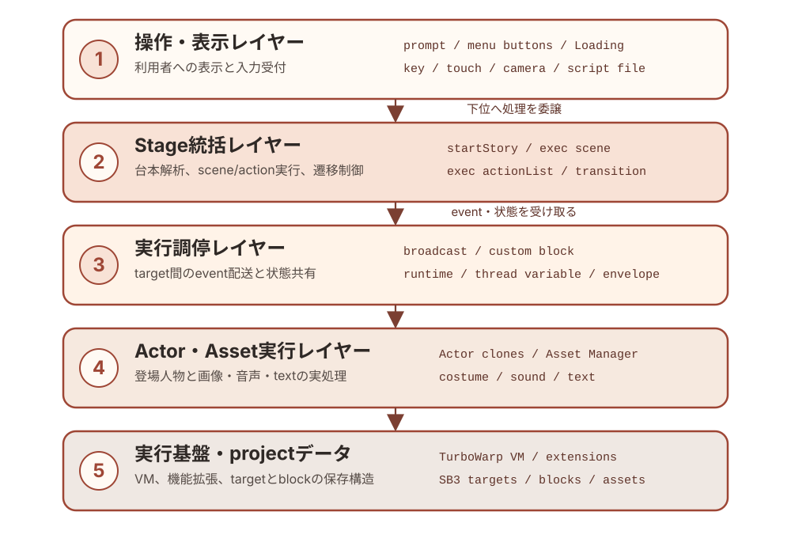
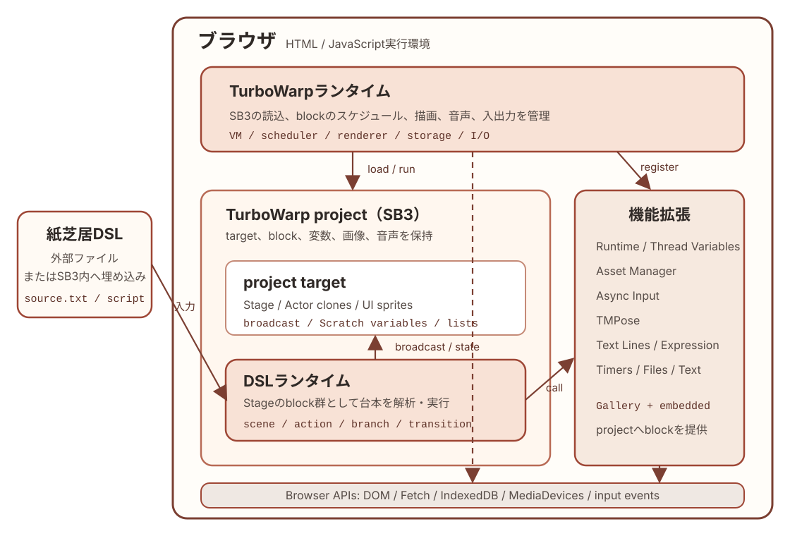
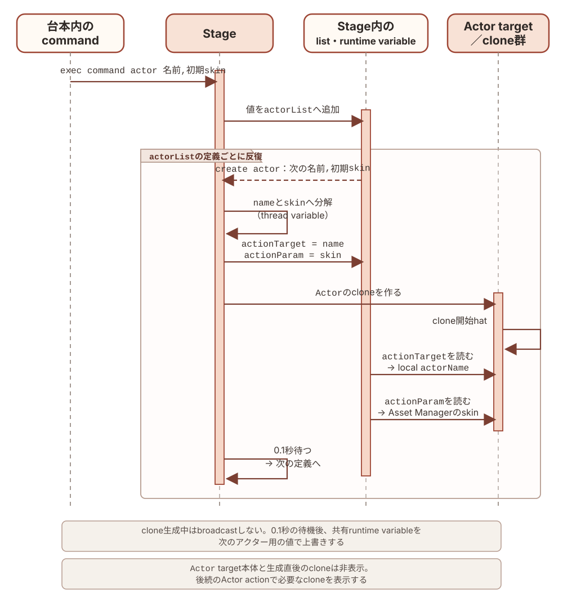
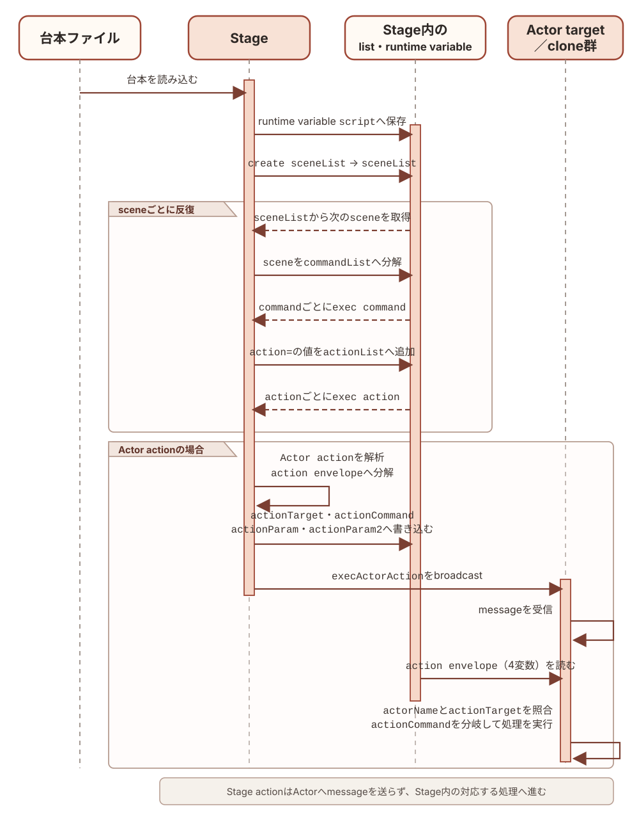
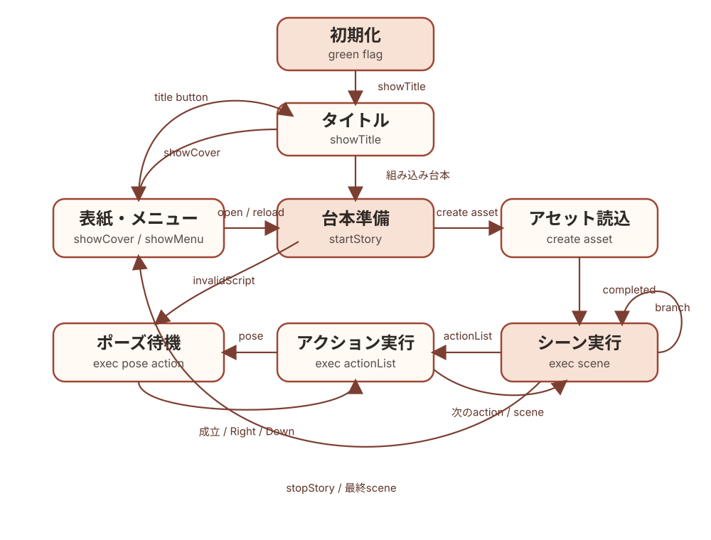

Copyright © 2026 Hiroya Kubo. この文書はCC BY-SA 4.0で提供します。
この文書は、TMPose紙芝居の汎用アプリSB3について、target、変数、event、 custom block、呼出し関係、状態遷移の内部仕様を現在の実装に対応させて記録します。 成果物プロファイル、SB3・台本変換ビルダーの外部契約、開発・検証・公開手順は ソフトウェアメンテナンスガイドを参照してください。台本の 外部仕様は台本DSLマニュアルと コマンドリファレンスを参照してください。
本書は「アプリが内部でどのように動くか」を扱い、「リポジトリをどう変更・公開するか」 や「ビルダーをどう利用するか」は扱いません。
対象アプリ／DSL: kamishibai=3.1
過去のバージョンからの変更はhistory.mdを参照してください。
本書ではScratch／TurboWarpの用語と、このアプリ固有の用語を次の意味で使います。
表中の等幅書体（Stage、script、action=など）は、target名、変数名、DSL記法として
実装に現れる正確な綴りを表します。通常書体の用語は、概念または分類名を表します。
詳細なデータ構造や処理は、表に示した後続の章で説明します。
| 用語 | この文書での意味 |
|---|---|
| project | Stage、sprite、block、変数、画像、音声などをまとめたScratch／TurboWarp作品全体 |
| SB3 | projectを1ファイルに格納するScratch 3形式。このリポジトリではbuildによって生成する成果物 |
| target | project内でblock、変数、costumeなどを所有する実行単位。1つのStage targetと、0個以上のsprite targetがある |
Stage |
projectに1つだけある舞台のtarget。このアプリでは背景表示に加え、台本解析と実行状態の統括を担う。詳細は「SB3の構成」を参照 |
| sprite | 舞台上に表示・移動でき、costume、sound、block、変数を持てるtarget |
| 用語 | この文書での意味 |
|---|---|
| clone | 実行中にspriteから作る複製。同じblockを共有する一方、スプライトローカル変数にはcloneごとの値を持てる |
Actor target／アクタースプライト |
アクターをcloneとして生成するためのsprite雛形。このprojectではtarget名がActor |
| アクター | Actor targetから作られ、actorNameで区別される個々のclone。物語上の登場人物としてactionを実行する |
| 用語 | この文書での意味 |
|---|---|
| asset | Asset Managerへ名前付きで登録する画像、音声、text。SB3内のcostumeなどと外部URLのresourceを同じ方法で参照できる |
| 紙芝居DSL／台本ファイル | asset、アクター、scene、actionなどをテキストで定義する言語と、その言語で記述したファイル |
script |
読み込んだ台本を保持するruntime variable。外部ファイルと組み込み台本は、ここから同じ処理経路へ入る |
| scene | 台本を---で区切った実行単位。内部では最初の区切りより前をscene 0として扱う |
| command | 台本のkey=value形式の1行。exec command %s %sがkeyに応じて設定、定義、action登録などを行う |
| action | scene内で順番に実行する演出命令。Stageが実行するStage actionと、アクターへ送るActor actionがある |
| action envelope | Actor actionの宛先、command、引数を入れるactionTarget、actionCommand、actionParam、actionParam2のまとまり |
| message／broadcast | Scratch／TurboWarpのevent配送機構。broadcastすると、そのmessageに対応するhat blockがあるtargetやcloneで処理が始まる |
| 用語 | この文書での意味 |
|---|---|
| Scratch変数／list | SB3に保存され、Stageまたはspriteが所有する値と配列 |
| runtime variable | Runtime Variables機能拡張が保持し、project全体から参照する共有値 |
| thread variable | Thread Variables機能拡張が、カスタムブロック呼出し単位で保持する一時値 |
| event hat／hat block | green flag、broadcast受信、clickなどのeventを受けて処理を開始する、stack最上部のblock |
| カスタムブロック | project内で定義し、名前と引数によって呼び出す処理。一般的なプログラミング言語のprocedureに相当する |
| block ID | SB3のtargets[].blocks内でblockを識別するkey。実装スナップショット内の調査にだけ使い、版をまたぐ永続IDとしては扱わない。詳細は「event、カスタムブロック、呼出し関係」を参照 |
アプリ内部構造の正本はapp/project.source.jsonです。本書のtarget、変数、list、
broadcast、hat、カスタムブロック定義は、このファイルから抽出した現在の構造を
記載しています。配布用kamishibai.sb3はapp/から生成する成果物であり、本書の
調査元にはしません。
次の図は、汎用アプリSB3の実行時責務を上位から下位へ並べた概念図です。 上位レイヤーは下位レイヤーへ処理を委譲し、eventや共有変数を介して結果と状態を受け取ります。 各レイヤーの具体的なtarget、変数、message、custom blockは後続の章で説明します。

次の図は、DSLがブラウザ上で実行されるまでの包含関係と主要な接続を示します。 TurboWarpランタイムはSB3 projectと機能拡張を読み込み、project内のStageに実装された DSLランタイムが、外部ファイルまたはSB3へ埋め込まれたDSLを解析・実行します。 DSLランタイムはbroadcastや共有変数でproject内のtargetを統括し、画像・音声、入力、 姿勢認識などの処理を機能拡張へ委譲します。

| 項目 | 件数 |
|---|---|
| target（Stageを含む） | 8 |
| block | 1490 |
| event hat | 39 |
| カスタムブロック定義 | 42 |
| Scratch変数 | 6 |
| Scratch list | 11 |
| broadcast message | 18 |
| 静的なruntime variable名 | 17 |
| 静的なthread variable名 | 36 |
| TurboWarp機能拡張 | 12 |
本書に掲載するblock IDの意味と安定性は 「event、カスタムブロック、呼出し関係」で説明します。
| ID | 役割 | 取得形態 |
|---|---|---|
sipcconsole |
デバッグ用console | Gallery |
lmsTempVars2 |
runtime variable／thread variable | Gallery |
strings |
文字列処理 | Gallery |
kubohiroyaassetmanager |
画像・音声の登録とLoading進捗 | 埋め込み |
tmpose |
カメラ姿勢認識 | 埋め込み |
localstorage |
台本のローカル保存 | Gallery |
kubohiroyatextlines |
行単位の台本処理 | 埋め込み |
kubohiroyaruntimeexpression |
分岐条件式の評価 | 埋め込み |
kubohiroyaasyncinput |
key／touch入力とscene移動 | 埋め込み |
lmsTimers |
waitと時間ベースactor actionのタイマー |
Gallery |
files |
外部台本ファイルの選択 | Gallery |
text |
テキスト描画・アニメーション | Gallery |
埋め込み拡張の由来、固定commit、SHA-256はapp/embedded-extensions.jsonを正本とし、
更新方法はsb3-toolchainのワークフロー
に従います。
Scratch／TurboWarpのprojectは、1つのStage（ステージ） targetと、0個以上のsprite targetから 構成されます。Stage targetはproject全体の舞台を表し、背景（backdrop）を表示します。 Stage自身にblock、variable、listを持てますが、spriteのように座標を変えて動かしたり、 cloneを作ったりする対象ではありません。
このアプリでは、Stage targetを舞台の表示だけでなく、紙芝居全体の制御役として使います。
Stageに置かれたblock群が、台本の読込・解析、assetとactorの生成、sceneとactionの実行、
カメラと入力、画面遷移、共有runtime状態を統括します。したがって、本書やシーケンス図で
Stageと書いた場合は、画面に見える舞台だけでなく、このStage targetとそこに置かれた
制御用block群を指します。
| target | 種別 | 役割 | 初期costume／sound |
|---|---|---|---|
Stage |
Stage | 初期化、台本解析、scene/action実行、カメラ、入力、遷移を統括 | Title, Stars, LoadingBackdrop |
Actor |
sprite雛形 | 物語上の登場人物ごとにcloneされ、移動・見た目・音・時間actionを実行 | button1／音声なし |
prompt |
UI sprite | 操作案内、pose案内、台本エラーをAsset Managerのcostumeで表示 | ui-placeholder |
openButton |
UI sprite | 外部台本ファイルを選択してstartStoryへ渡す |
ui-placeholder |
reloadButton |
UI sprite | 保存済みの直前の台本を再読込する | ui-placeholder |
showTitleButton |
UI sprite | menuからtitleへ戻す | ui-placeholder |
Loading |
UI sprite | Asset Managerの読込開始・進捗・完了に合わせてcostumeを表示 | loading／音声なし |
LoadingBubbleAnchor |
UI sprite | Loading進捗メッセージ用のspeech bubble位置を固定 | loading-bubble-anchor |
Actorの本体は非表示で、cloneだけを登場人物として表示します。prompt、3つのmenu button、
Loading、LoadingBubbleAnchorの実画像は、台本のui.*設定または組み込みfallbackから
Asset Managerへ登録します。
Scratch／TurboWarpで1つのspriteから複数の登場人物を作る場合、cloneごとに スプライトローカル変数の識別子を持たせれば、同じblockを共有しながら個体を区別できます。 このアプリはその考え方を、cloneへ命令を届けるところまで拡張しています。
本書では、cloneの雛形として使うActor targetをアクタースプライト、そこから作られ、
スプライトローカル変数のactorNameを割り当てられた各cloneをアクターと呼びます。
アクタースプライトの本体は表示せず、物語の登場人物として表示するのはアクターだけです。
すべてのアクターは同じblock定義を共有し、actorNameによって互いを区別します。
Stageからアクターへ命令を届ける流れは次のとおりです。
actionTarget、actionCommand、actionParam、actionParam2というruntime variableへ
それぞれを格納する。このまとまりを本書ではaction envelopeと呼ぶ
execActorActionをbroadcastするActor cloneがmessageを受け取り、自分のactorNameがactionTargetの
対象に含まれるかを調べる
actionCommandを入れ子の条件分岐で振り分け、
移動、見た目、音、時間に関する処理を実行する
つまり、action envelopeが「誰に・何を・どの引数で実行させるか」を表し、broadcastが その命令を全アクターへ配送します。ここでいうcommandは、アクターに対する メソッドに相当しますが、TurboWarp上ではカスタムブロックと条件分岐で実装されています。
通常のScratch projectではcostumeやsoundはspriteに属します。このアプリでは TurboWarp Asset Managerを使い、 SB3内のcostume、backdrop、sound、textや、外部URLの画像・音声を、名前を持つassetとして 登録します。アクターの見た目や音のactionはこのasset名を参照するため、振る舞いを実装する アクタースプライトと、実際に使う画像・音声を分けて組み合わせられます。
台本DSLは、このassetの定義、アクターの定義、sceneごとにアクターへ送るactionの定義を テキストで記述するための言語です。TurboWarpで作られたこのアプリはDSLを解析し、assetを 読み込み、アクターを生成し、action envelopeとbroadcastを使って命令を実行します。 したがって、このアプリ全体は、紙芝居DSLを解析・実行する処理系であり、その実行基盤 （runtime）でもあります。
アクターは、台本準備時にactor= commandから生成します。これは生成済みのアクターへ
Actor actionを送る処理とは実行時期もデータの渡し方も異なるため、別の図に示します。

exec command %s %sはactor=の値をactorListへ追加します。各値は
アクター名,初期skin名の形式です。その後、Stageのcreate actorがactorListを順に読み、
各値をthread variableのnameとskinへ分けます。Stageは共有runtime variableの
actionTargetへname、actionParamへskinを設定してから、Actor targetのcloneを
作ります。
clone開始hatは、actionTargetをそのcloneのスプライトローカル変数actorNameへ保存し、
actionParamをTurboWarp Asset Managerへ渡して初期skinを設定します。Stageはcloneを
作るたびに0.1秒待ち、この初期化が走る機会を設けてから、共有runtime variableを次の
アクター用の値で上書きします。clone生成時にはexecActorActionをbroadcastしません。
Actor target本体はcloneの雛形として非表示です。cloneはこの表示状態を引き継ぐため、
生成直後も非表示であり、sceneの後続のActor actionによって必要な時点で表示されます。
台本ファイルからActor内の処理までを、データの変換と実行の順に並べると次のようになります。
外部ファイルだけでなく、再生用SB3へ組み込んだ台本もscriptへ入った後は同じ経路を通ります。

create sceneListはscriptをscene単位に分けます。exec scene # %s with %sは現在のsceneを
行単位のcommandListに分け、exec command %s %sでcommandを順に処理します。このうち
action=の値をactionListへ集め、exec actionListが各actionをexec action %sへ渡します。
Stage actionはStage内で実行されます。Actor actionでは、StageがactionTarget、
actionCommand、actionParam、actionParam2へaction envelopeを書き込んでから、
execActorActionをbroadcastします。messageを受信した各Actor cloneは4変数を読み、
自分のactorNameと宛先を照合します。実際にcommandを分岐して処理するのは、宛先に
一致したアクターだけです。
Stageは台本をsceneList、commandList、actionListへ段階的に変換します。
さらにsceneと共有runtime状態を管理し、Stage actionを実行します。Actor cloneの責務は、
生成時に自分のactorNameと初期skinを確定し、その後、
「アクターへ命令を届けるしくみ」で配送されたActor actionのうち
自分を対象とするものを実行することです。
UI spriteは表示状態をshowMenu／hideMenu、showPrompt／hidePrompt、
Asset ManagerのLoading messageで受け取ります。台本の実行状態をUI sprite側へ
複製せず、Stageを状態の所有者とします。
変数は、SB3へ永続化されるScratch変数／list、threadごとの一時値、project全体で共有する runtime variableの3種類に分けます。
| 所有者 | 変数 | 初期値 | 役割 |
|---|---|---|---|
Stage |
ポーズ認識 |
0 |
pose認識中の表示・互換用状態 |
Stage |
チャージ |
0 |
pose成立までのcharge表示・互換用状態 |
Stage |
actionIndex |
1 |
現在処理するactionListの位置 |
Stage |
poseIndex |
1 |
現在処理するposeListの位置 |
Stage |
__tmpose_embedded_script |
空文字 | player profileの組み込み台本予約領域 |
Actor |
actorName |
_template_ |
cloneが担当する台本上のactor名 |
__tmpose_embedded_scriptはStageに一つだけ存在し、monitorを持ちません。genericと
editorでは空、playerではbuilderが変換済み台本を設定します。
すべてStage所有で、汎用SB3では空の初期状態です。
| list | 役割 |
|---|---|
skinList |
actor action中のcostume候補 |
poseList |
pose action中の認識label候補 |
soundList |
actor action中のsound候補 |
actionList |
現在sceneのaction列 |
sceneList |
台本から抽出したscene block |
commandList |
sceneの前に評価する設定command |
actorList |
台本から生成するactor定義 |
assetList |
登録するasset定義 |
durationList |
pose候補ごとの継続時間 |
sceneLabelList |
scene labelとindexの対応 |
lines |
Text Linesで分割した台本行 |
静的な名前を持つruntime variableは次の17個です。
| 変数 | 生存期間／役割 |
|---|---|
script |
読み込んだ変換済み台本。title、reload、startStory間で共有 |
version |
台本のkamishibai version |
startSceneIndex |
台本で指定した開始scene |
sceneIndex |
現在実行中のscene index |
actionTarget, actionCommand, actionParam, actionParam2 |
StageからActor cloneへ渡すaction envelope |
nextSceneLabel |
key／touch入力が要求した遷移先scene label |
skipMode |
Space、Right、Downによる未消費の進行要求 |
skipContext |
title、action、pose、sceneのどの境界が要求を消費できるか |
poseRecog, poseCharge, poseIdle |
pose認識のしきい値、charge時間、idle時間 |
poseRecognitionSound |
setPoseRecognitionSoundで指定した認識中の音声アセット名 |
loadingCostume |
Loading spriteへ適用するcostume名 |
message |
Loading bubbleへ表示する現在の進捗文言 |
このほか、exec command %s %sはDSLで指定されたruntime variable名を動的に設定します。
分岐条件はbranch:<branchName>という名前で保存します。この2系列は入力から名前が決まるため、
静的な17個には数えません。
カスタムブロック呼出しごとに分離され、呼出し終了後に共有状態として残さない値です。
| 用途 | 名前 |
|---|---|
| 共通loop・文字列処理 | index, length, line, lineIndex, name, value, key, keyValue |
| 台本解析 | sceneBlock, sceneLabel, sceneLabelList, condition, conditionList |
| asset／actor生成 | asset, assetList, resourceId, actor, actorName, skin |
| action実行 | action, actionResult, actionListResult, stageActionResult, actorActionResult |
| command／branch／入力 | commandIndex, branchIndex, keyId, hasRead |
| cover | cover, coverBackground, coverBgm |
| Actor clone | x, y, scale |
| その他 | durationList, sceneIndex |
runtime variableと同名のsceneIndex thread variableは、カスタムブロック内の局所的な
引数・計算値です。project全体の現在sceneはruntime variable側だけを正本とします。
表のtargetはblockを所有するStageまたはsprite、IDはそのtargetのblocks
objectにあるkeyです。SB3内ではproject.jsonのtargets[].blocks、このリポジトリ
ではapp/project.source.jsonの同じ位置に保存されます。IDはopcodeや表示名ではなく、
この実装スナップショット内のblockを特定するための内部識別子です。
sb3-toolchainのbuildとimportはblock IDを新規採番せず、入力に含まれるIDを保持します。
既存blockを再生成しないTurboWarp上の編集・保存でも通常は保持されます。一方、blockの
削除と再作成、複製やcopy & pasteによる新しいblockの作成、target／projectのimportなどで
blockが再生成されるとIDは変わります。したがって、IDは外部仕様、永続ID、他の版をまたぐ
参照には使いません。アプリを編集してIDが変わった場合は、本章も現在の
app/project.source.jsonに合わせて更新します。
procedures_definitionと、接続されていないreporter blockはevent hatに含めません。
「実行される内容」はhatを起点とする主要なカスタムブロック呼出し、broadcast、状態変更、
表示操作を要約したもので、標準blockを含む全処理の逐語的な列挙ではありません。
| target | ID | trigger | 実行される内容 |
|---|---|---|---|
Stage |
iM |
green flag | stop camera preview, stop pose recog, stop camera, hide all actors; showTitle送信 |
Stage |
i; |
key space |
showCover送信 |
Stage |
i} |
key down arrow |
finishTimedActorAction送信、skipMode=Down |
Stage |
jb |
key right arrow |
finishTimedActorAction送信、skipMode=Right |
Stage |
jX |
startStory受信 |
start camera, create sceneList, exec scene # %s with %s, create asset, create actor |
Stage |
j/ |
stopStory受信 |
stop camera, stop pose recog, show cover; deleteAllActors, showMenu送信 |
Stage |
j? |
debugTestCamera受信 |
TMPoseのcamera previewを直接確認 |
Stage |
kD |
showCover受信 |
show cover; hidePrompt, deleteAllActors送信 |
Stage |
l= |
Stage click | 組み込み台本の有無に応じてshowCoverまたはstartStory送信 |
Stage |
l[ |
showTitle受信 |
実行contextをclearし、hidePrompt, deleteAllActors送信 |
Stage |
m~ |
stopKeyInput受信 |
Async Inputの全listenerを停止 |
Stage |
nx |
stopTouchInput受信 |
Async Inputの全listenerを停止 |
| target | ID | trigger | 実行される内容 |
|---|---|---|---|
Actor |
nY |
execActorAction受信 |
isTimeBasedAction, wait for actor action %s seconds |
Actor |
oH |
deleteAllActors受信 |
cloneを削除 |
Actor |
oJ |
clone開始 | actorName、位置、scaleをruntime envelopeから初期化 |
Actor |
actorFinishHat |
finishTimedActorAction受信 |
対象actorとskipModeを照合して時間actionを完了 |
| target | ID | trigger | 実行される内容 |
|---|---|---|---|
prompt |
oS |
showPrompt受信 |
案内costumeを表示 |
prompt |
oV |
hidePrompt受信 |
非表示 |
prompt |
oX |
invalidScript受信 |
エラーcostumeを表示 |
openButton |
o! |
green flag | 非表示 |
openButton |
o% |
sprite click | file選択後にhideMenu, startStory送信 |
openButton |
o* |
hideMenu受信 |
非表示 |
openButton |
o, |
showMenu受信 |
ui.open skinで表示 |
reloadButton |
o. |
green flag | 非表示 |
reloadButton |
o: |
hideMenu受信 |
非表示 |
reloadButton |
o= |
sprite click | 保存済み台本でhideMenu, startStory送信 |
reloadButton |
o[ |
showMenu受信 |
台本が保存済みなら表示 |
showTitleButton |
o` |
green flag | 非表示 |
showTitleButton |
o| |
hideMenu受信 |
非表示 |
showTitleButton |
o~ |
sprite click | hideMenu, showTitle送信 |
showTitleButton |
pb |
showMenu受信 |
title以外なら表示 |
Loading |
pf |
green flag | 非表示 |
Loading |
pm |
assetLoadingStarted受信 |
Loading costumeを表示 |
Loading |
pj |
assetLoadingProgress受信 |
costumeを循環 |
Loading |
ph |
assetLoadingCompleted受信 |
非表示、完了sound |
LoadingBubbleAnchor |
loadingBubbleFlag |
green flag | 非表示、bubbleをclear |
LoadingBubbleAnchor |
loadingBubbleStarted |
assetLoadingStarted受信 |
anchorを表示 |
LoadingBubbleAnchor |
loadingBubbleProgress |
assetLoadingProgress受信 |
runtime variable messageをsay |
LoadingBubbleAnchor |
loadingBubbleCompleted |
assetLoadingCompleted受信 |
bubbleをclearして非表示 |
引数名はprototypeのargumentnames、warpはprototypeのmutation.warpから取得します。
「呼び出す処理／送信するmessage」には定義内で呼ぶ別のカスタムブロックや機能拡張の
処理を示し、broadcast messageは送信する名前を明記します。
| target | ID | 定義 | 引数 | warp | 呼び出す処理／送信するmessage |
|---|---|---|---|---|---|
Stage |
c: |
init skinList with %s |
commaSeparatedText |
yes | selectValue # %s separated by %s from %s |
Stage |
c_ |
init poseList with %s |
commaSeparatedText |
yes | selectValue # %s separated by %s from %s |
Stage |
dc |
init soundList with %s |
commaSeparatedText |
yes | selectValue # %s separated by %s from %s |
Stage |
gH |
init durationList with %s |
commaSeparatedText |
no | selectValue # %s separated by %s from %s |
Stage |
eM |
selectValue # %s separated by %s from %s |
index, separator, text |
yes | — |
Stage |
hl |
substr of %s after %s |
text, firstDelim |
no | — |
Stage |
dL |
min %s %s |
valueA, valueB |
yes | — |
Stage |
d) |
exec command %s %s |
key, value |
no | substr of %s after %s, selectValue # %s separated by %s from %s, setTMPoseURL with %s; invalidScript |
Stage |
e+ |
create sceneList |
— | yes | selectValue # %s separated by %s from %s |
Stage |
fe |
create asset |
— | no | 組み込みLoadingBackdrop; Asset Manager; assetLoadingStarted/Progress/Completed |
Stage |
fv |
create actor |
— | no | selectValue # %s separated by %s from %s |
| target | ID | 定義 | 引数 | warp | 呼び出す処理／送信するmessage |
|---|---|---|---|---|---|
Stage |
dQ |
setTMPoseURL with %s |
URL |
no | — |
Stage |
dU |
start camera |
— | no | — |
Stage |
dX |
stop camera |
— | no | — |
Stage |
eD |
start pose recog |
— | no | — |
Stage |
dG |
stop pose recog |
— | no | — |
Stage |
dY |
rate of pose recog |
— | no | — |
Stage |
d! |
label of pose recog |
— | no | — |
Stage |
d% |
start camera preview |
— | no | — |
Stage |
d( |
stop camera preview |
— | no | — |
Stage |
dk |
exec pose action %s |
actorName |
no | start camera preview, start pose recog, exec pose %s, stop pose recog, stop camera preview; showPrompt, hidePrompt |
Stage |
f[ |
exec pose %s |
actorName |
no | change skin..., Asset Managerの認識音再生／停止、min..., rate of pose recog |
| target | ID | 定義 | 引数 | warp | 呼び出す処理／送信するmessage |
|---|---|---|---|---|---|
Stage |
fB |
exec scene # %s with %s |
sceneIndex, sceneData |
no | selectValue # %s separated by %s from %s, substr of %s after %s, exec command %s %s, exec actionList, hide all actors; invalidScript |
Stage |
e= |
exec actionList |
— | no | exec action %s |
Stage |
f( |
exec action %s |
action |
no | exec stage action %s, exec actor action %s |
Stage |
gP |
exec stage action %s |
action |
no | touchInputToChangeScene %s %s, exec keyInputToChangeScene %s %s, exec branch action %s, exec transition action %s, wait %s seconds |
Stage |
gp |
exec actor action %s |
action |
no | selectValue # %s separated by %s from %s, 3つのlist初期化、exec pose action %s; execActorAction |
Stage |
ee |
hide all actors |
— | no | execActorAction |
Stage |
eh |
change skin of %s to %s |
actorName, skinName |
no | execActorAction |
Stage |
eR |
show cover |
— | no | selectValue # %s separated by %s from %s; showMenu |
Actor |
it |
isTimeBasedAction |
— | no | — |
Actor |
actorWaitDef |
wait for actor action %s seconds |
seconds |
no | — |
| target | ID | 定義 | 引数 | warp | 呼び出す処理／送信するmessage |
|---|---|---|---|---|---|
Stage |
ga |
exec transition action %s |
transitionName |
no | exec transition reset, exec transition fadeUp, exec transition fadeOut, exec transition fadeToWhite, exec transition fadeFromWhite |
Stage |
gf |
exec transition fadeOut |
— | no | — |
Stage |
gh |
exec transition fadeUp |
— | no | — |
Stage |
gj |
exec transition reset |
— | no | — |
Stage |
fadeToWhiteDef |
exec transition fadeToWhite |
— | no | exec transition fadeUp |
Stage |
fadeFromWhiteDef |
exec transition fadeFromWhite |
— | no | exec transition fadeOut |
Stage |
g] |
exec branch action %s |
branchName |
no | selectValue... |
Stage |
hq |
exec keyInputToChangeScene %s %s |
keyIdList, sceneLabelList |
no | Async Input |
Stage |
hu |
touchInputToChangeScene %s %s |
actorNameList, sceneLabelList |
no | Async Input |
Stage |
hy |
wait %s seconds |
seconds |
no | More Timers |
| 起点 | 経路 |
|---|---|
| green flag | 初期化 → camera／pose停止 → actor非表示 → showTitle |
startStory |
台本検証 → create sceneList → asset／actor生成 → exec scene # %s with %s |
| scene実行 | exec command %s %s → exec actionList → actionごとにexec action %s |
| Stage action | branch、transition、key／touch入力、waitなどへdispatch |
| Actor action | runtime envelope設定 → execActorAction → 対象clone → 移動・見た目・音・時間action |
| pose action | camera preview／pose認識開始 → setPoseRecognitionSound指定音を再生 → exec pose %s反復 →音声／認識停止 → prompt非表示 |
| asset loading | 組み込みの黒背景 → setLoadingBackdrop指定背景 → Loading用画像 → 通常アセット |
| 終了 | stopStory → camera／pose停止 → actor削除 → cover → menu |
| message | 主な送信者 | 受信者 | 役割 |
|---|---|---|---|
showPrompt |
Stage |
prompt |
操作・pose案内を表示 |
hidePrompt |
Stage |
prompt |
案内を非表示 |
invalidScript |
Stage |
prompt |
台本エラーを表示 |
hideMenu |
3つのmenu button | 3つのmenu button | menuを一括非表示 |
showMenu |
Stage |
3つのmenu button | 利用可能なmenuを表示 |
startStory |
Stage, openButton, reloadButton |
Stage |
台本の解析・実行を開始 |
stopStory |
Stage |
Stage |
実行を停止しcoverへ戻す |
showCover |
Stage |
Stage |
coverを構築してmenuを表示 |
showTitle |
Stage, showTitleButton |
Stage |
title状態へ戻す |
execActorAction |
Stage |
Actor |
action envelopeをcloneへ通知 |
deleteAllActors |
Stage |
Actor |
全cloneを削除 |
assetLoadingStarted |
Stage／Asset Manager |
Loading, LoadingBubbleAnchor |
Loading表示を開始 |
assetLoadingProgress |
Stage／Asset Manager |
Loading, LoadingBubbleAnchor |
進捗costumeとmessageを更新 |
assetLoadingCompleted |
Stage／Asset Manager |
Loading, LoadingBubbleAnchor |
Loading表示を終了 |
stopKeyInput |
Async Input | Stage |
key listenerを停止 |
stopTouchInput |
Async Input | Stage |
touch listenerを停止 |
finishTimedActorAction |
StageのRight／Down key hat |
Actor |
時間actionを確定状態へ進める |
debugTestCamera |
TurboWarp editorからの手動送信 | Stage |
camera previewの診断 |
stopKeyInputとstopTouchInputは標準broadcast blockではなく、Async Inputへ渡した
callback messageです。debugTestCameraは通常フローに送信元を持たない診断用messageです。

主要状態はStageが所有します。UI表示そのものを状態の正本にせず、runtime variable、 broadcast、実行中のcustom blockから導出します。
| 状態 | 入口 | 主な出口 |
|---|---|---|
| 初期化 | green flag | showTitle |
| title | showTitle |
組み込み台本ならStage clickでstartStory、それ以外はcover |
| cover／menu | showCoverまたはstopStory |
open／reloadでstartStory、title buttonでshowTitle |
| 台本準備 | startStory |
正常ならasset loadingとscene実行、検証異常ならinvalidScript |
| asset loading | create asset |
assetLoadingCompleted後にscene実行 |
| scene実行 | exec scene # %s with %s |
次scene／branch、最終sceneでstopStory、解析異常でinvalidScript |
| action実行 | exec actionList |
Rightでaction境界、Downでscene境界、完了で次action |
| pose待機 | exec pose action %s |
pose成立、Right／Downでaction実行へ戻る |
| 台本エラー表示・実行停止 | 台本・command・scene解析エラー時のinvalidScript |
promptがui.invalidScriptを表示し、送信元のstop allで実行を停止 |
invalidScriptはpose待機への遷移ではありません。Stageは台本検証、command解析、
scene解析のエラー時にこのmessageを送信し、各送信箇所の直後にstop allを実行します。
promptはmessageを受信するとui.invalidScriptのskinを設定して表示します。
skipModeは要求、skipContextは消費可能な境界です。要求はtitle、action、pose、sceneの
該当境界だけが消費し、scene開始、cover、stopでclearします。nextSceneLabelはkey／touch
listenerが設定し、scene loopがlabelをindexへ解決したあと削除します。
03-user-guide.md: アプリの利用方法と成果物の使い分け04-dsl-manual.md: 台本の構造と書き方05-command-reference.md: コマンドとactionの外部仕様06-developer-guide.md: 成果物とビルダーの利用、setup、変更、検証、公開history.md: DSLとアプリの変更履歴README.md: プロジェクト全体の入口